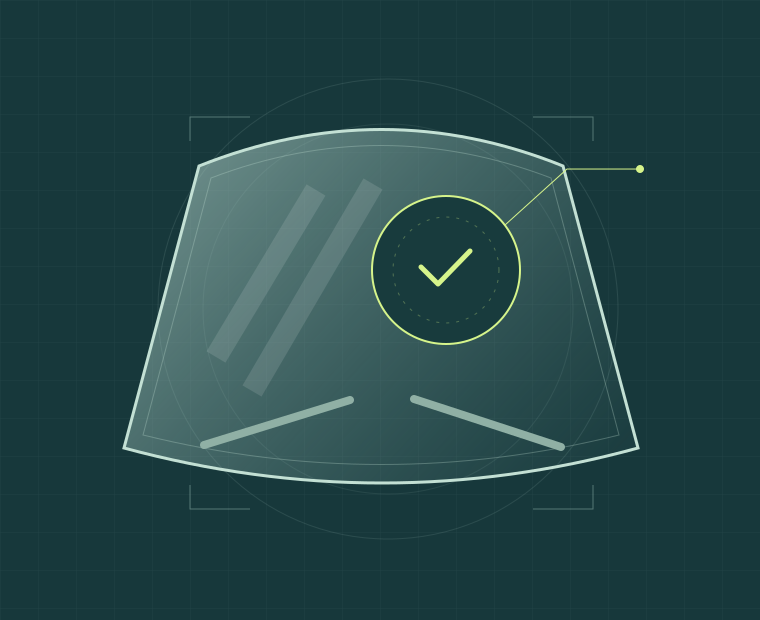

01
Reparación de piquetes
Evaluación de impactos por piedras para determinar si pueden tratarse con resina, conservando el parabrisas.
Conocer la reparaciónZONA NORTE · REGIÓN METROPOLITANA
Reparación de parabrisas a domicilio en la zona norte de la Región Metropolitana.
Antes de cambiar todo el vidrio, evaluemos el daño. Envíanos una foto del piquete o la fisura y te orientamos sobre el siguiente paso.
Evaluación según el daño · Atención sujeta a disponibilidad

Evaluación del daño
Cotización antes de agendar
Atención a domicilio
SOLUCIONES PARA TU VEHÍCULO
Desde un piquete por piedra hasta el grabado de patentes. Encuentra el servicio y consulta los detalles antes de coordinar.
Evaluación de impactos por piedras para determinar si pueden tratarse con resina, conservando el parabrisas.
Conocer la reparaciónRevisamos las características de la fisura. No todos los daños son reparables: la evaluación define cómo seguir.
¿Se puede reparar?Grabado en vidrios y espejos de tu vehículo. Consulta las piezas a grabar, el precio y la disponibilidad.
Ver este servicioCLARO DESDE EL PRIMER MENSAJE
Queremos que sepas qué enviar y qué consultar, sin vueltas.
Envía una foto cercana y otra del parabrisas completo. Cuéntanos tu comuna y el modelo del vehículo.
Recibe orientación inicial. La posibilidad de reparar se confirma con la evaluación técnica del vidrio.
Confirma el precio, la modalidad, el tiempo estimado y las condiciones antes de agendar.
EL SERVICIO, MÁS DE CERCA
Próximamente: videos propios de reparaciones y resultados antes y después.
Este reproductor utiliza un enlace de prueba. El video no corresponde a un trabajo de Reparabrisas.
Los resultados de cada servicio dependen de las características del daño y se explican durante la evaluación.
Visitar nuestro InstagramCERCA DE TI
Trabajamos principalmente a domicilio en la zona norte de la Región Metropolitana. Evaluamos solicitudes de las demás zonas de la región según ubicación y disponibilidad. Confirma cualquier costo de traslado al cotizar.
Consultar cobertura08:00 a 19:00 hrs · Hora de Chile
Atención principalmente a domicilio. Confirma dirección y horario por WhatsApp.
RESOLVAMOS TUS DUDAS
La información que necesitas para decidir con tranquilidad.
La cotización depende del tipo, tamaño, ubicación y cantidad de daños. Envíanos fotografías y tu comuna para consultar el precio y cualquier costo de traslado antes de agendar.
No. La posibilidad de reparación depende del estado del vidrio, la profundidad y ubicación del daño, entre otros factores. Las fotos permiten una orientación inicial; la evaluación técnica confirma si la reparación es adecuada o conviene un reemplazo.
Puede quedar una marca visible. El resultado varía según el daño y su estado previo; consulta qué mejora puede esperarse en tu caso antes de autorizar el trabajo.
El tiempo estimado se informa según el servicio. La atención en el día está sujeta a evaluación y disponibilidad de agenda; confírmala por WhatsApp.
Trabajamos principalmente a domicilio en la zona norte de la Región Metropolitana. Para las demás zonas de la región, evaluamos la ubicación y disponibilidad antes de confirmar la visita.
Solicita las condiciones de garantía aplicables a tu reparación y los medios de pago disponibles junto con la cotización, antes de confirmar la atención.
Indica el modelo del vehículo, cuántos vidrios y espejos necesitas grabar y tu comuna. Con esos datos podemos orientar tu solicitud.
EMPECEMOS CON UNA FOTO
Completa estos datos para preparar tu mensaje. Luego adjunta las fotos directamente en WhatsApp.
Escribir por WhatsApp